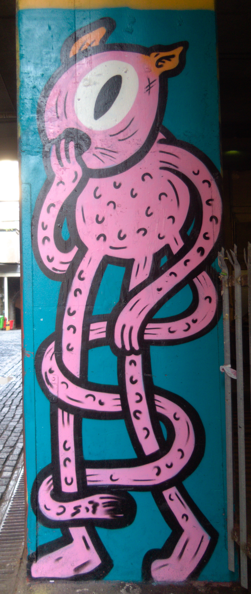

Street Art Aberdeen
Near 73-77 Union St, Aberdeen AB11 6BD, UK
Thanks to
The Pingus
for the photo.
Photo:

Location:
Year created:
Unknown
Medium:
Spray
State:
Gone
Carnegie's Brae
Other art nearby, the 20 closest...
Instagram image